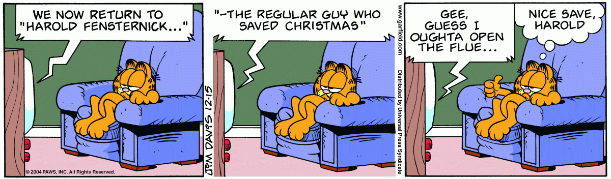

Quality sleep is a fickle thing.
More shades for more cool.
If you let your mind wander, how do you know it’ll come back?
Laugh, and the world laughs with you!

Santa needs an open flue.
Garfield doesn’t like answering stupid questions.
Manage Odie’s drool with a sponge.
If we could time travel, I could come back and avoid this conversation.
What could fit under Garfield’s bed?
With all these problems, what else could go wrong?
There’s a big world out there, but Garfield prefers his little world.
They didn’t need that sign.
There are plenty of fish in the sea, but the bait is dead.
Garfield encourages you to be active, so that he doesn’t need to.
You can’t have everything, but Garfield can.
Jon’s profound thought was fleeting.
Jon asked the boys to get along with each other, so they gang up on him.
Never a dull moment, but there are dull years.
Garfield won’t cheer up but he will paste a smile on his face.
Garfield thinks “kick” and Odie leaps off the table.
Shoes go squeak... so do socks!

Wait for the question, Odie!
Sleeping. Again! Sleeping.
Jon feels macho, Garfield feels skinny.
Garfield tells Odie not to stand so close, so he steps back, but stretches his tongue to maintain position.
Your key or mine?
I need a shave? You need a shave!
The boys are ready for hot chocolate, and Garfield is standing on Odie.